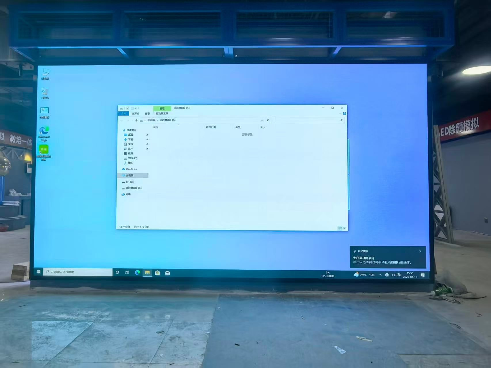

By Cassie
What does a UAE LED display importer need to know? Importing LED displays into the UAE means clearing goods through customs, obtaining the conformity certificate required for electrical products, and specifying equipment that survives extreme heat and humidity. This 2026 guide explains the sequence.
The UAE is one of the more straightforward markets to import into, provided the paperwork is correct. Customs clearance is efficient, free zones offer genuine advantages, and duty rates are generally low. The difficulty lies in product conformity and in specifying for the climate.
A UAE LED display importer who treats the process like a European import will meet two surprises: a conformity regime that applies to electrical goods, and summer temperatures that exceed the design range of many off-the-shelf screens.
Goods are declared through Dubai Customs or the relevant emirate authority, using the HS code that matches the product. The UAE operates a common customs tariff across the GCC for most goods, and duty rates are typically low, but the declaration still requires an accurate value and origin.
The importer needs a valid trade licence, an importer code, and customs registration. Most businesses use a clearance agent who files the declaration and handles the port formalities.
| Step | What Is Required | Who Handles It |
|---|---|---|
| Trade licence | Valid commercial licence | Importer |
| Importer registration | Customs code for the entity | Importer |
| Declaration filing | Entry with HS code and value | Clearance agent |
| Conformity certificate | Product conformity for electrical goods | Importer and supplier |
| Arabic labelling | Product and packaging information | Supplier |
| Delivery | Transport to site or warehouse | Importer or agent |
Prepare the documents before the goods arrive. A shipment that reaches the port without a conformity certificate is held while the paperwork is arranged, and storage charges accumulate daily.
Electrical products entering the UAE fall under a conformity scheme administered by the Emirates Authority for Standardization and Metrology. LED displays and their power supplies require a certificate of conformity, and the supplier's test reports must support the application.
Ask the supplier for the test reports before the order is placed, not after. A supplier who cannot supply EMC and safety test reports leaves the importer unable to register the product, and a screen that cannot be registered cannot be sold lawfully.
| Requirement | What It Covers | Evidence to Hold |
|---|---|---|
| Conformity certificate | Product compliance for the UAE | Certificate for the model |
| Safety test report | Electrical safety | Report naming the offered model |
| EMC test report | Electromagnetic compatibility | Report naming the offered model |
| RoHS evidence | Hazardous substance limits | Supplier declaration and test data |
| Technical file | Drawings and specifications | Complete file held by the importer |
| Arabic labelling | Product and packaging information | Label artwork |
Confirm the certificate relates to the exact model being imported. A registration for a similar screen in the range does not cover a different model, and the mismatch surfaces at customs rather than at the factory.
The UAE applies a low customs duty on most imported goods and value added tax at the standard rate. Duty is calculated on the customs value, which depends on the Incoterm agreed with the supplier.
| Cost Element | Basis | Notes |
|---|---|---|
| Customs duty | Commodity code and value | Generally low under the GCC tariff |
| Value added tax | Value plus duty plus freight | Standard rate applies |
| Clearance agent fee | Per declaration | Varies by agent and volume |
| Port and storage | Per day after the free period | Mounts quickly if documents are late |
| Conformity certificate | Per product or shipment | Budget for the processing time |
| Inland transport | By distance and size | Confirm delivery to site |
Because the tax is recoverable for a registered business, the cash-flow question is timing rather than absolute cost. A UAE LED display importer registered for VAT reclaims the input tax but still funds it at the point of import.
The UAE climate is the specification that buyers most often overlook. Summer ambient temperatures exceed forty-five degrees Celsius in the shade, and coastal humidity is high year-round. A screen designed for a European climate runs its cooling system at maximum.
For UAE sites, high ambient temperatures and airborne dust call for sealed IP65 cabinets — the COB EF outdoor series runs at 3000 nits, and the COB EH-PRO adds fine-pitch outdoor options for shorter viewing distances.
Choose cabinets rated for the actual ambient temperature, with derated brightness if necessary. Confirm the power supply's temperature range, because a supply rated to forty degrees will fail early in a UAE summer.
| Condition | Risk | Specification Response |
|---|---|---|
| Ambient above 45 degrees | Thermal shutdown | Higher temperature rating and derating plan |
| Coastal humidity | Corrosion of connectors | Sealed cabinets and contact treatment |
| Blowing dust and sand | Cooling path blockage | Filtration and cleaning schedule |
| Direct solar load | Cabinet over temperature | Airflow design and shading |
| Saline coastal air | Accelerated corrosion | Corrosion-protected hardware |
| Night temperature drop | Condensation inside cabinets | Acclimatisation and ventilation |
Confirm the derating plan with the supplier. A screen run at reduced brightness in summer lasts far longer than one pushed to maximum output, and the plan should be agreed before the screen is ordered.
A UAE LED display importer can operate from a free zone or from the mainland, and the choice affects customs treatment. Goods held within a free zone are outside the customs territory, so duty and tax do not apply until they enter the mainland.
Selling into the mainland from a free zone requires clearing the goods, which brings them into the customs territory and triggers duty and tax. Match the structure to where the customers actually are, not to the licence cost alone.
Ask every candidate the same questions and record the answers. For UAE projects the conformity documentation and the thermal specification matter as much as the price.
| Question | What a Strong Answer Looks Like | Warning Sign |
|---|---|---|
| Conformity evidence | Test reports supplied for the model | Evidence promised later |
| Thermal rating | Stated maximum ambient temperature | Temperate ratings only |
| Arabic documentation | Supplied with the goods | English only |
| Driver IC and power supply | Named brand and exact model | Brand only, no part number |
| Spare parts availability | Stated period in writing | No commitment given |
| Service response | Stated time by fault severity | Answer avoided |
Confirm the components in writing and require written approval for any substitution. A supplier facing a component shortage may change a part quietly, and the change only appears when the screens arrive.
Each mistake is inexpensive to avoid during planning and costly after the goods land. A UAE LED display importer who builds the conformity file and specifies for the climate avoids most of them.
Asia Vision Technology manufactures LED displays in Shenzhen and supplies importers, distributors, and contractors across the Gulf. Cabinets are produced for high ambient temperatures with dust filtration and corrosion protection, and the factory supplies the conformity documentation UAE importers need.
For UAE projects the company supplies rental cabinets for events, fine pitch screens for retail and corporate work, and high-brightness outdoor displays for advertising. OEM and ODM production is available for distributors building their own range.
Related reading: Denmark LED Display Importer Guide 2026: EU Entry and CE